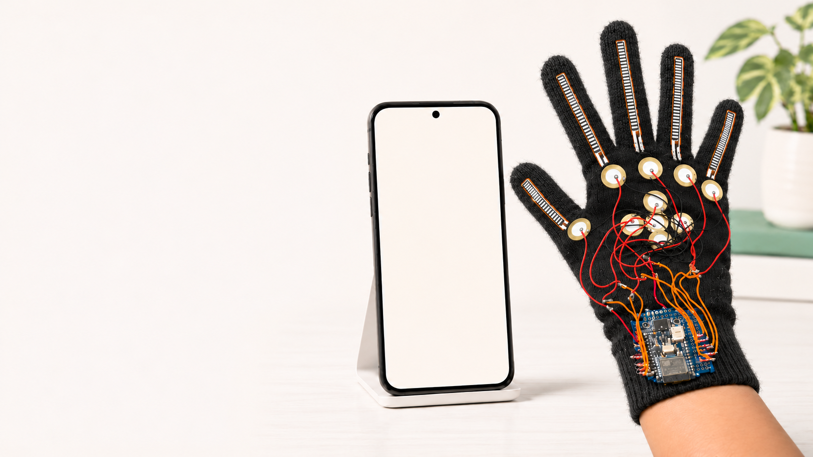
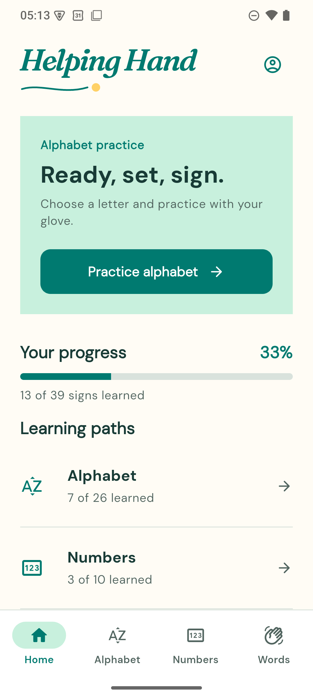
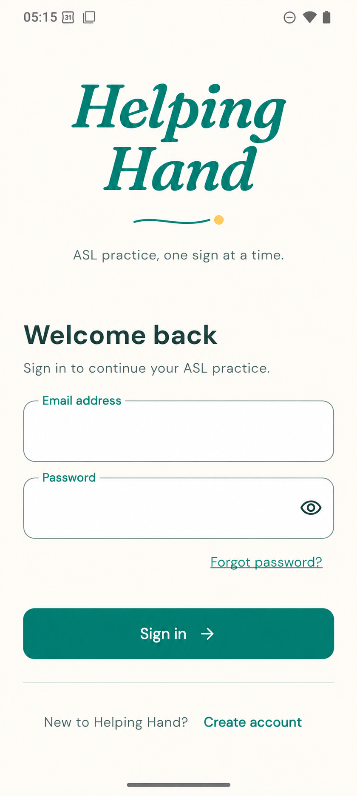
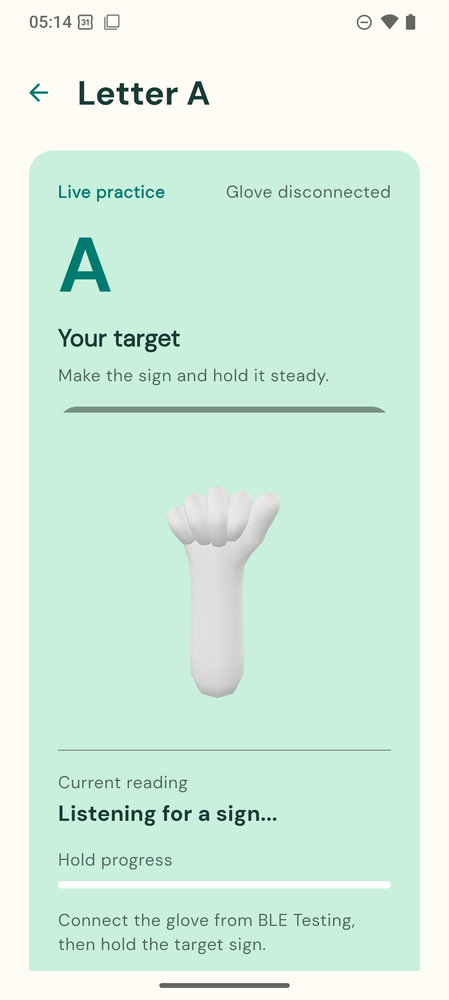

Static signs
Example · G
Multilayer perceptron (MLP)
On the ESP32 · 24 letters and 10 digits


Post-mortem · November 19, 2026
A glove and mobile app for practicing ASL with haptic feedback.
0:00–0:15 · 15 seconds. Introduce the team and point to the glove and phone.
“Helping Hand is a glove and Android app for practicing American Sign Language with haptic feedback. We’ll show you what we built, how someone uses it, and what we learned.”
94 of 100 hearing parents surveyed used self-teaching resources to learn ASL for their deaf child.
0:15–0:35 · 20 seconds. Connect the family motivation to the gap in solo practice.
“In a survey of 100 hearing parents learning ASL for their deaf child, 94 used books, videos, or apps to teach themselves. A recorded example gives you a sign to copy. When you practice alone, you still have to catch mistakes in your handshape or movement.”
Our solution
Measure finger bend and hand motion.
Reads the sensors and recognizes held signs.
Carries sensor readings and predictions to the phone.
Recognizes moving signs, shows results, and saves progress.
During the demo, the app sends haptic commands back to the glove.
0:35–1:00 · 25 seconds. Point from left to right, then follow the return arrow.
“The flex strips measure finger bend, and the motion sensor measures how the hand moves. The ESP32 recognizes signs you hold steady. Bluetooth sends its predictions and sensor readings to the Android app. The app recognizes moving signs, shows the result, and saves progress. During the demo, it also sends haptic commands back to the glove.”
On the ESP32 · 24 letters and 10 digits
On the phone · one for J/Z, one for words
1:00–1:25 · 25 seconds. Point to the five bars, then follow the trace on the right.
“For G, we can look at one set of finger-bend readings. The glove’s multilayer perceptron classifies that handshape. For Z, the order of the motion matters. A temporal convolutional network looks for patterns across successive readings. The phone runs one for J and Z and another for Hello, Please, and Yes.”
Final build


Finger bend, acceleration, and rotation feed recognition.
Five by the fingers and five in a plus on the back of the hand.
Perfboard with individual wires.
1:25–1:50 · 25 seconds. Point to the actual glove, the earlier PCB, and the wiring callout.
“The demo glove has five flex sensors, a motion sensor, ten piezo buzzers, and a cuff-mounted ESP32. We tried a custom PCB and later hid the connections with conductive thread. When sensor readings dropped out, we switched to individual wires on perfboard. We’re powering it over USB today.”




1:50–2:15 · 25 seconds. Move across the screenshots from sign-in to saved lessons.
“After signing in, Home shows your progress. Pick a letter, number, or word. The lesson shows the target sign, and the app saves your completed lessons. Eight word lessons are listed, and the recognizer supports three. Let’s try it with the glove.”
Glove and Android app
Finish on saved progress in Words.
2:15–4:15 · 120 seconds. Use the projected phone. Start signed in, connected, and in Developer Mode. The run sheet gives the individual time limits and recovery actions.
G. “I’ll hold G steady. Watch for the match and hold indicator. This prediction comes from the glove.”
Z. “I’ll start an attempt, trace Z, and finish it. The phone recognizes the sequence.” Describe the actual outcome. Try one quick recovery if useful, then move on. I is the rehearsed spare held pose.
3. “I’m curling the middle finger on purpose. Watch which finger lights up, then the dots move from bottom to center to top. That means straighten. I’ll correct the finger and show what the app does.”
Hello and Please. “For Hello I tap Start and Finish. After a match, the glove can replay a preset cue from left to center to right. Please uses a loop around the back of the hand.” Show Please if time permits and describe any output as observed.
Progress. “A green row and checkmark mean that lesson was saved.” Call out a change only if a new row turns green during the demo. Finish on Words and return to slide 8.
Post-mortem
Matching a sign completes the lesson. Progress is still there when you reopen the app.
The app uses the full motion to recognize a sign. Hello, Please, and Yes matched in live practice.
Finger pulses cue you to bend or straighten. Preset motion cues show how to move for word practice.
4:15–5:25 · 70 seconds. Give each story about 20–23 seconds.
Saved practice progress. “A prediction by itself gave the learner no record of their practice. We tied a match to the lesson they picked, so completion was visible and saved to the right place. During rehearsal we closed and reopened the app and could still see the completed signs.”
Recognition for moving signs. “We recorded whole attempts so the model could use the order of the motion. After rebuilding the glove, we collected more recordings and extended the input window. The updated word model accepted five of five matching recordings in offline replay. Hello, Please, and Yes also completed in the live check.”
Haptic feedback. “We wanted each buzz to tell the learner what to do. We used the flex readings to choose a bend or straighten cue and tested it on the glove with the number 3. For word practice, we built preset motion cues that play after a match on Hello or Please.”
Post-mortem
The PCB broke, and the conductive-thread build lost sensor readings. We switched to individual wires.
Test connections while flexing the glove.Add strain relief before final mounting.
The thumb and index sensors barely responded when the fingers bent.
Check each sensor reading early.Recheck calibration and known signs after hardware changes.
The glove can’t tell how fingers are positioned relative to each other or where the hand is relative to the body.
Test what the sensors can measure before training.Try camera tracking for finger spacing and hand location.
5:25–6:30 · 65 seconds. Explain each problem, its impact, and what we’d do next.
Unreliable connections. “The custom PCB broke and the conductive-thread assembly lost sensor readings as the glove moved. We suspected shorts and switched to discrete wires. Next time we’d check continuity while flexing the assembly and add strain relief before mounting it.”
Damaged flex sensors. “The thumb and index readings barely changed when the fingers bent, which made some attempts look wrong. The raw channels exposed the damaged sensors. We’d check each channel early, then recalibrate and repeat a few known signs after every hardware change.”
Limits of the glove sensors. “The flex strips measure finger bend, and the wrist sensor measures motion and rotation. Two signs can give similar readings even if the fingers cross or the hand starts closer to the face. Next time we’d test those cases before training and try camera tracking for the details the glove misses.”
Helping Hand
Check recognition, feedback, and saved progress in the same practice session.
6:30–6:45 · 15 seconds. Leave this slide up for the question period.
“Our main lesson was to test the glove and app together, through recognition, feedback, and saved progress. Next we’d test with more wearers to see which signs work consistently and whether users can interpret the cues.”
Backup
| Area | Original goal | Presentation build |
|---|---|---|
| Wearable | Mounted PCB and battery power | Wired perfboard, calibrated ICM-20948, and USB power |
| Recognition | A–Z, 0–9, and eight words | 34 held poses plus J/Z motion. Eight lessons, three words in the bundle. |
| Feedback | Corrective guidance during practice | On-screen matching and saved progress. Developer Mode adds a finger cue for 3 and preset playback for Hello and Please. |
| Validation | Practice and recognition testing | Selected live and offline checks. Multi-wearer accuracy, tactile interpretation, and battery runtime remain open. |
Question period. The slide distinguishes the original scope from the build being shown. The original design proposed a mounted PCB, battery operation, broader word recognition, and general corrective feedback. The working app includes J/Z and the scoped haptic demos. The written reports describe the earlier release snapshot. Displayed lesson counts and recognition model labels describe different parts of the app.
The demo uses the wired perfboard glove, USB power, a signed-in Android phone, Flutter app version 1.0.1+2 from the gael working copy, and the piezo_demo ESP32 environment. The review base was c72ad4f with local app changes. Record the actual running revision, phone/OS, and firmware during rehearsal. Current-device cloud readback, battery runtime, and broad wearer validation are open. The single glove has limited ability to distinguish finger spread or infer hand location relative to the body.
The app also has developer tools for BLE diagnostics, recording and exporting labeled attempts, and manually testing the piezo outputs. These tools support setup and development. The learner demonstration uses Alphabet, Numbers, and Words.
Backup
| Check | Observed result | Scope |
|---|---|---|
| Live practice | G, I, 1, Hello, Please, Yes · 3/3 each K, X · 1/3 each | One wearer, three attempts per target |
| J/Z replay | 4/4 matches accepted 0/36 unrelated recordings accepted | Offline, with some recordings seen during development |
| Word replay | 5/5 matches accepted 0/25 wrong-target checks accepted | Offline, with recordings reused across wrong targets |
| Haptics | Manual outputs matched app dots. The automatic 3 demo worked on the glove. | Hello and Please cue order checked in software with simulated responses |
Question period. Live counts came from one wearer and selected targets on the glove and app. Offline J/Z replay accepted two J and two Z attempts and rejected 36 unrelated recordings. Some were examined earlier in development. The word replay used five matching recordings and 25 wrong-target checks drawn from reused recordings. The design draft’s approximately 90% accuracy figure was a goal. The available trial counts describe the specific conditions shown.
The Number 3 automatic cue has a live operator report. Hello and Please pulse order and cancellation were checked in Flutter with simulated responses. The operator described faint vibration in the separate manual output check. Phone latency and wearer interpretation of cues have yet to be measured. Firebase rules were updated for word completion IDs. The post-fix cloud readback has not been run.